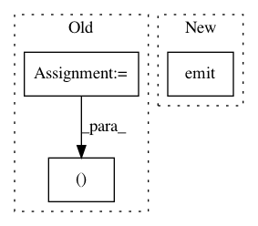

453222b587dd5dcdb75386c7d528b6f52b8c32f0,Orange/widgets/visualize/utils/plotutils.py,VizInteractiveViewBox,mouseDragEvent,#VizInteractiveViewBox#Any#Any#,255
Before Change
def mouseDragEvent(self, ev, axis=None):
pos = self.childGroup.mapFromParent(ev.pos())
can_show, point_i = self.graph.can_show_indicator(pos)
if ev.button() != Qt.LeftButton or (ev.start and not can_show):
self.mouse_state = 2
if self.mouse_state == 2:
After Change
self.setCursor(Qt.ArrowCursor)
self.item_id = None
else:
self.moved.emit(self.item_id, pos.x(), pos.y())
self.graph.show_indicator(self.item_id)
In pattern: SUPERPATTERN
Frequency: 3
Non-data size: 3
Instances
Project Name: biolab/orange3
Commit Name: 453222b587dd5dcdb75386c7d528b6f52b8c32f0
Time: 2018-10-09
Author: tankovesna@hotmail.com
File Name: Orange/widgets/visualize/utils/plotutils.py
Class Name: VizInteractiveViewBox
Method Name: mouseDragEvent
Project Name: ilastik/ilastik
Commit Name: f6a152a82b9636da3b229b1fff88e481eaed3950
Time: 2017-08-28
Author: carstenhaubold@googlemail.com
File Name: ilastik/workflows/tracking/conservation/conservationTrackingWorkflow.py
Class Name: ConservationTrackingWorkflowBase
Method Name: post_process_lane_export
Project Name: thenetcircle/dino
Commit Name: 930f98eab72c07f9d36036fde859978b58605128
Time: 2017-10-18
Author: oscar.eriks@gmail.com
File Name: dino/validation/request.py
Class Name: RequestValidator
Method Name: on_login